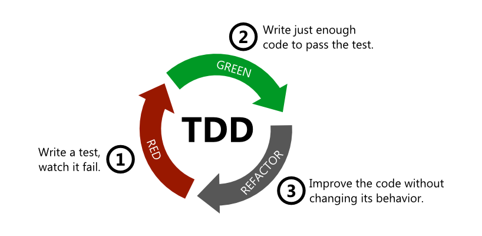

Build better (web)applications with TypeScript
Current usages javascript
- Power backends
- Create web applications
- Create hybrid mobile applications
- Architect cloud solutions
- Design neural networks
- Control robots
- Many more
Wait Wat?!
...
Harmony? ECMAScript 2015? Babel?
Popular options.
Includes: classes, lexical scope, lambda...
Lacks …
- Interfaces
- Dynamic module affinity (System.js, Require.js, etc.)
- External library definitions
- Generics
TypeScript
Javascript that scales
TypeScript is a typed superset of JavaScript that compiles to plain JavaScript.
Any browser. Any host. Any OS. Open source.
A Superset of JavaScript called Typescript
- All features of javascript are available
- Types and type checking
- Interfaces
Primary benefits of Typescript
- more reliable codebase
- more sustainable codebase
- more scalable codebase
- Better developer experience
- Enhance Javascript but not replace it
Real World
🔎 Discovery
Intent is clearer with types and interfaces.
Real World
📄 Documentation
Libraries make it easier to discover and learn how to use APIs.
Real World
🥇 Version Safety
Use the latest language syntax even when targeting older browsers.
Real World
🔐 Development Time Security
Less "fat-finger", catch bugs earlier in the cycle.
Real World
🚑 Scope Safety
Modules, Classes, and Lambdas take care of this.
Real World
🤼🤸⛹️🏌️ Team Scale
Easier for multiple teams and members to work in parallel.
Demo Time!

Questions?
Build even better (web)applications with TDD
What is TDD
TDD is a software development process where you use testing to develop in small cycles
TDD Cycle
Benefits of TDD
- Requirements need to be clear before development
- Easy to validate code
- It is more easy to write new functionalities
- No need to maintain documentation as tests describe the functionality of the codebase.
Benefits of TDD
- No fear of making changes to the codebase as tests will fail when you break something.
- Creating tests first ensures a loosely coupled codebase. Tightly coupled codebases are hard to test.
- Spend less time debugging, Most of the time the code you write just works so there is no need to debug the code.
- Reduces the amount of bugs in the codebase by 40 - 80%
Demo Time!